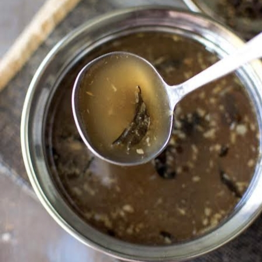

Ingredients:
- 3 ripe tomatoes, chopped or mashed
- 2 cups water
- 1 tsp tamarind pulp (optional, for extra tanginess)
- 1½ tsp rasam powder
- ½ tsp turmeric powder
- ½ tsp black pepper powder (optional, for spice)
- Salt to taste
- 1 tbsp chopped coriander leaves
For Tempering (Tadka):
- 1 tsp oil or ghee
- ½ tsp mustard seeds
- ½ tsp cumin seeds
- 2 dried red chilies
- 1 sprig curry leaves
- 2 garlic cloves, crushed
- ½ tsp hing (asafoetida)

Instructions:
Prepare Rasam Base:
In a pot, heat water, add chopped tomatoes, tamarind pulp, rasam powder, black pepper powder, and salt. Simmer for 5 minutesAdd Spices:
Add rasam powder and black pepper powder, mix well, and let it simmer for 5 minutesPrepare Tempering:
Heat oil/ghee, add mustard seeds, cumin, dried red chilies, curry leaves, crushed garlic, and hing. Fry until fragrant.
Combine & Simmer:
Pour the tempering into the simmering tomato rasam and cook for another 2 minutes.
Garnish & Serve:
Add chopped coriander leaves and serve hot with rice or as a soup.
కావలసినవిః
- 2 పండిన టమోటాలు,
- తరిగిన 1 tsp చింతపండు గుజ్జు
- ½ స్పూన్ పసుపు పొడి
- 1½ స్పూన్ నల్ల మిరియాలు
- 1 స్పూన్ జీలకర్ర
- ½ స్పూన్ రసం పొడి
- రుచికి ఉప్పు 2
- 2 కప్పుల నీరు
తాలింపు కోసం
- 1 స్పూన్ నూనె లేదా నెయ్యి
- ½ స్పూన్ ఆవాలు
- ½ స్పూన్ జీలకర్ర గింజలు
- 2 ఎండిన ఎర్ర మిరపకాయలు
- 1 రెమ్మ కరివేపాకు
- 2 వెల్లుల్లి లవంగాలు
- ½ స్పూన్ హింగ్
టొమాటో బేస్ సిద్ధం:
తరిగిన టమోటాలను నీరు, పసుపు, ఉప్పు మరియు చింతపండు గుజ్జుతో 5-7 నిమిషాలు మెత్తగా అయ్యే వరకు ఉడకబెట్టండి. వాటిని బాగా మాష్ చేయండి.సుగంధ ద్రవ్యాలు జోడించండి:
రసం పొడి మరియు నల్ల మిరియాల పొడి వేసి, బాగా కలపండి మరియు 5 నిమిషాలు ఉడకనివ్వండి. తాలింపు సిద్ధం:
నూనె/నెయ్యి వేడి చేసి, ఆవాలు, జీలకర్ర, ఎండు మిరపకాయలు, కరివేపాకు, దంచిన వెల్లుల్లి, మరియు హింగ్ జోడించండి. సువాసన వచ్చేవరకు వేయించాలి.కలిపి అణిచిపెట్టు:
వేగుతున్న టొమాటో రసంలో తాలింపు పోసి మరో 2 నిమిషాలు ఉడికించాలి. గార్నిష్ & సర్వ్:
తరిగిన కొత్తిమీర తరుగు వేసి వేడివేడిగా అన్నంతో లేదా సూప్ లాగా సర్వ్ చేయాలి.